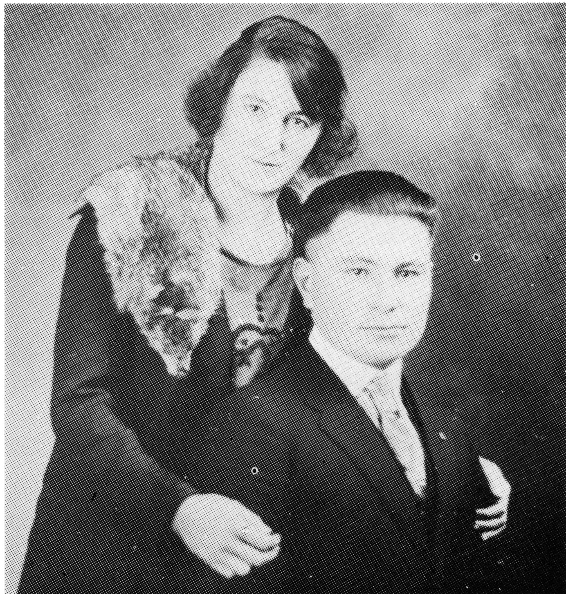

EMILIE (L'HEUREUX) NOLIN
Emilie was the last daughter of Moise and Sophie, and as all the others before her, she was taught to knit, mend, sew, preserve food, and the general duties of a woman of that day. As she had three younger brothers plus nieces, Alma and Alice (Leonidas' daughters) who had come to live with them, her life was not any easier than those who had grown up before her.
As each of his sons left home to set up their own families, Moise found that he needed hired hands to help with the ranch work. One of these was a young fellow by the name of Patrick Nolin.
By Christmas of 1922, Emilie must have felt on top of the world. She had married Patrick three months earlier and was now pregnant with his child. As Patrick still worked for Moise, they had stayed on with her parents. By the New Year's beginning, Emilie was a widow with a child on the way. What a helpless feeling to watch your young husband die of pneumonia in a four day period. What frustration she must have felt as she tried to nurse him with inadequate medical knowledge and supplies. How she must have cursed Patrick's pride which did not allow him to wear proper long underwear for the harsh Saskatchewan winters!
She stayed on with her parents and had her baby, Herve, in July of 1923. After a few years, she came out of mourning and began dating again. She found a special young man in Father Duhaime's uncle. However, her father strongly suggested that if she chose to marry him instead of one of Patrick's brothers, her children would have different last names. She followed her father's advice, as was expected of her, and married Isidore.
Life was not to be a bowl of roses for Emilie and Isidore, who raised their family at what is now Arthur and Reine Dubois' home. Poverty was to be their greatest enemy. Isidore would be away much of the time, working once for Howard and Marie-Louise LaClare for about $15.00 per month plus room and board, then for the government patrol until the government changed, and any other jobs that he could get. They kept a few chickens which were fed with table scraps as they could not afford feed. They were loaned a few cows by Emilie's brother, George, so the children would have milk, until they could finally afford their own cow. As well, they owned one team of horses. As all farmers of that day, they were as self-sufficient as possible, relying on the seven to eight dollar relief from the government to buy sugar and flour.

(Emilie's second husband)
The children attended school, but when the winter days got too cold, they would have to miss classes as the single team of horses could not be spared from their job of hauling hay and straw, mainly from Meota.
As the children grew older, they too helped in any way that they could. Herve would help Isidore sharpen willow pickets. First, they would go into the coolies and cut the willows with axes and bucksaws. Then they would sharpen them and haul them to Meota. For all this work, they received a mere 1 1/2 cents per picket!
Through all the strife and hardship, they remained devote Catholics, driving their buggy and team to Jackfish on Sundays for mass. Those days were as much social events as religious, as for many, this was the only time that they saw others besides their own family. Except for the occasional dances or get-togethers at neighbors home, most stayed home day in and day out.
The children began to leave home. Herve went to work for George & Marguerite (L'Heureux) Dion at Vawn, before slowly making his way to North Battleford. Reine got married and the family became smaller.
However, Emilie was to see only Herve and Reine settled into their own homes before dying at the early age of 49. She was the youngest of Moise and Sophie's children to pass away. She is buried in the Jackfish Cemetary.
Emilie L’Heureux Nolin
| NAME | BORN | MARRIED | SPOUSE | BOY | GIRL | DIED |
|---|---|---|---|---|---|---|
| Emilie | June 8, 1898 | Sept. 22, 1922 | Patrick Nolin | 1 | 0 | June 23, 1947 |
| Patrick | Jan. 2, 1923 | |||||
| Remarried | Dec. 3, 1925 | Isidore Nolin | 1 | 3 | Deceased | |
| EMILIE’S FIRST FAMILY | ||||||
| Herve P. | July 12, 1923 | Jan. 22, 1946 | Delores Lessard | 0 | 3 | |
| Delores | Mar. 13, 1986 | |||||
| EMILIE’S SECOND FAMILY | ||||||
| Reine | July 15, 1926 | Oct. 25, 1943 | Paul Bru | 3 | 5 | |
| Emilienne | Feb. 18, 1930 | , 1950 | Claude Cadrain | 2 | 3 | |
| Remarried | , 1973 | Mike Shumlick | 0 | 0 | ||
| Corine | Apr. 19, 1933 | Sept. 15, 1953 | Anthony Bertsch | 0 | 2 | |
| Euclid | Sept. 28, 1928 | Oct. 25, 1951 | Helen Bertsch | 0 | 5 | |
| Emilie’s Grandchildren | ||||||
| HERVE’S FAMILY | ||||||
| Annette | Nov. 4, 1946 | July 12, 1969 | Robert Hyde | 1 | 1 | |
| Bernadette | Mar. 28, 1949 | Sept. 23, 1978 | Marin Bolcic | |||
| Carole | July 10, 1951 | Sept. 2, 1972 | Roger Ayotte | 1 | 1 | |
| Emilie’s Great Grandchildren | ||||||
| Herve’s Grandchildren | ||||||
| ANNETTE’S FAMILY | ||||||
| David | Oct. 7, 1973 | |||||
| Marie | Dec. 7, 1975 | |||||
| CAROLE’S FAMILY | ||||||
| Stephan | July 7, 1978 | |||||
| Nicole | June 10, 1982 | |||||
| Emilie’s Grandchildren | ||||||
| REINE’S FAMILY | ||||||
| Hubert | Feb. 26, 1945 | Feb. 19, 1966 | Georgette Duhaime | 1 | 1 | |
| Jeannette | Oct. 16, 1946 | June 29, 1968 | Wilfred Knight | 1 | 1 | |
| Lloyd | Nov. 29, 1947 | Feb. , 1948 | ||||
| Lillian | Aug. 15, 1950 | Aug. 10, 1971 | John Duchuk | 2 | 1 | |
| Ulric (Ricky) | Sept. 11, 1951 | Oct. 10, 1975 | Joy Wearing | 1 | ||
| Paulette | July 12, 1953 | Mar. 20, 1971 | Richard Stebanuk | 1 | 1 | |
| Adele | Sept. 18, 1957 | May 17, 1985 | Helmut Rhinehart | |||
| Beatrice | Mar. 10, 1964 | Nov. , 1985 | ||||
| Emilie’s Great Grandchildren | ||||||
| Reine’s Grandchildren | ||||||
| HUBERT’S FAMILY | ||||||
| Michele | Feb. 12, 1967 | |||||
| Marc | Aug. 5, 1969 | |||||
| Jeannette’s Family | ||||||
| Christopher | May 6, 1969 | |||||
| Ginger | Nov. 4, 1974 | |||||
| LILLIAN’S FAMILY | ||||||
| Wayne | Mar. 9, 1972 | |||||
| Lisa | Feb. 18, 1974 | |||||
| Ashley | Jan. 30, 1977 | |||||
| RICKY’S FAMILY | ||||||
| Robby | July 4, 1980 | |||||
| PAULETTE'S FAMILY | ||||||
| Tammy Lynn | Apr. 1, 1972 | |||||
| Shane | May 12, 1975 | |||||
| Emilie's Grandchildren | ||||||
| EMILIENNE'S FAMILY | ||||||
| Gilles | Mar. 17, 1952 | Mar. 6, 1982 | Eleonore Thieson | 0 | ||
| Corine | July 1, 1953 | , 1973 | Bruce Sayers | 0 | 1 | |
| Remarried | , 1982 | Rick Daridics | 0 | 1 | ||
| Charlotte | Sept. 28, 1955 | |||||
| Madelaine | Aug. 31, 1958 | June 30, 1983 | Wayne Scheske | 0 | 2 | |
| Lloyd | Nov. 24, 1962 | |||||
| Emilie's Great Grandchildren | ||||||
| Emilienne's Grandchildren | ||||||
| CORINE'S FAMILY | ||||||
| Trina | ||||||
| Yvonne | ||||||
| MADELAINE'S FAMILY | ||||||
| Charity | ||||||
| Destiny | ||||||
| Emilie's Grandchildren | ||||||
| CORINE'S FAMILY | ||||||
| Claudette | July 8, 1955 | Nov. 10, 1973 | Gary Leece | 2 | 0 | |
| Deborah | Sept. 5, 1956 | Nov. 31, 1978 | Mark Huber | 2 | 0 | |
| Emilie's Great Grandchildren | ||||||
| Corine's Grandchildren | ||||||
| CLAUDETTE'S FAMILY | ||||||
| Mathew | May 26, 1974 | |||||
| Jamey | Nov. 8, 1977 | |||||
| DEBORAH'S FAMILY | ||||||
| Daniel | Dec. 24, 1978 | |||||
| Donald | June 29, 1983 | |||||
| Emilie's Grandchildren | ||||||
| EUCLID'S FAMILY | ||||||
| Geraldine | June 23, 1952 | Aug. 22, 1970 | Clifford Fiddler | 1 | 2 | |
| Maryanne | Apr. 13, 1953 | |||||
| Brenda | Dec. 5, 1953 | |||||
| Cheryl | Nov. 15, 1959 | May 29, 1982 | Dwayne Pentland | 1 | 1 | |
| Susan | Dec. 23, 1960 | May 20, 1980 | John Kennedy | 2 | 0 | |
| Emilie's Great Grandchildren | ||||||
| Euclid's Grandchildren | ||||||
| GERALDINE'S FAMILY | ||||||
| Jason | Mar. 8, 1971 | |||||
| Jennifer | Aug. 20, 1972 | |||||
| Tracy | Apr. 27, 1975 | |||||
| CHERYL'S FAMILY | ||||||
| Shawna | Jan. 18, 1976 | |||||
| Tyler | Dec. 11, 1982 | |||||
| SUSAN'S FAMILY | ||||||
| Brandon | Apr. 11, 1979 | |||||
| Jim | Apr. 26, 1981 | |||||
| TOTAL DESCENDANTS | 83 |
| LIVING | 78 |
| DECEASED | 5 |